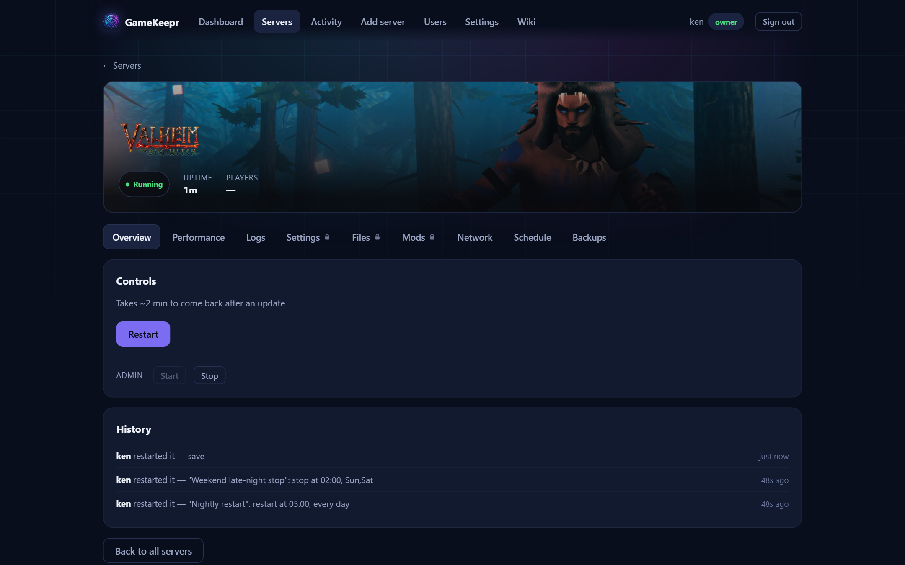

Welcome to GameKeepr

GameKeepr is this group's game server portal. It exists so that the servers do not depend on one person being home: anyone on the guest list can see whether a server is up, who is playing, and — when a game update needs it — restart a server and watch it come back.
What you are looking at
- Dashboard — the first question answered first: is anything wrong? Fleet status, who is online, activity and performance charts.
- Servers — one card per game server, with its status, uptime and player count. Click a card for the full page: controls, history, performance and — depending on your role — logs, files, mods, schedules and backups.
- Activity — who did what, when. Everyone sees restarts and starts; that is deliberate, because knowing someone just restarted a server is what stops the next person from restarting it again.
- Wiki — this manual. The pages you see follow your role: this list grows when your role does.
The one rule worth knowing
A restart is safe and self-healing — that is why everyone may do one. But a server that was just restarted is usually still loading its world, and restarting it again interrupts exactly that. GameKeepr enforces a cooldown after each restart for this reason. If a server seems down right after a restart, give it the few minutes the cooldown suggests before reaching for the button.
Getting help
If something looks wrong and a restart does not fix it, tell an operator or the owner — they can see the server's logs and configuration. The Activity page is also theirs to read in more detail, so a plain "it broke around 21:40" is genuinely useful.